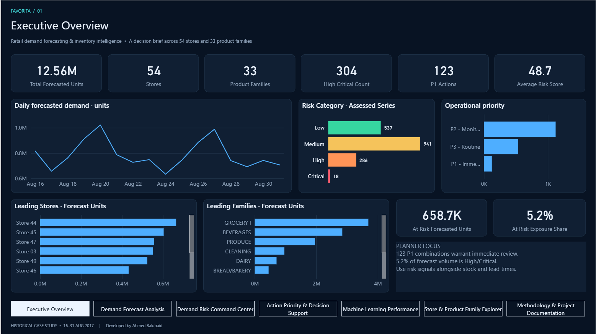
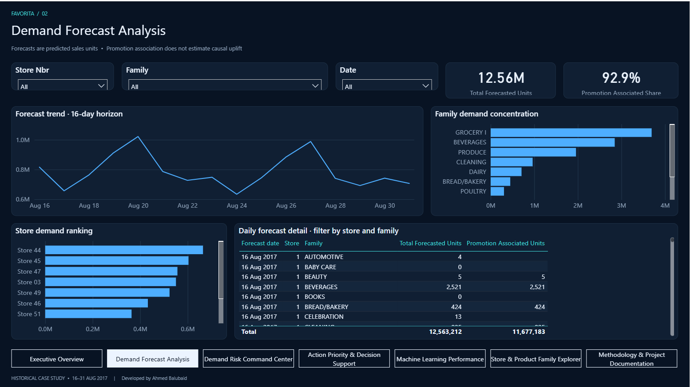
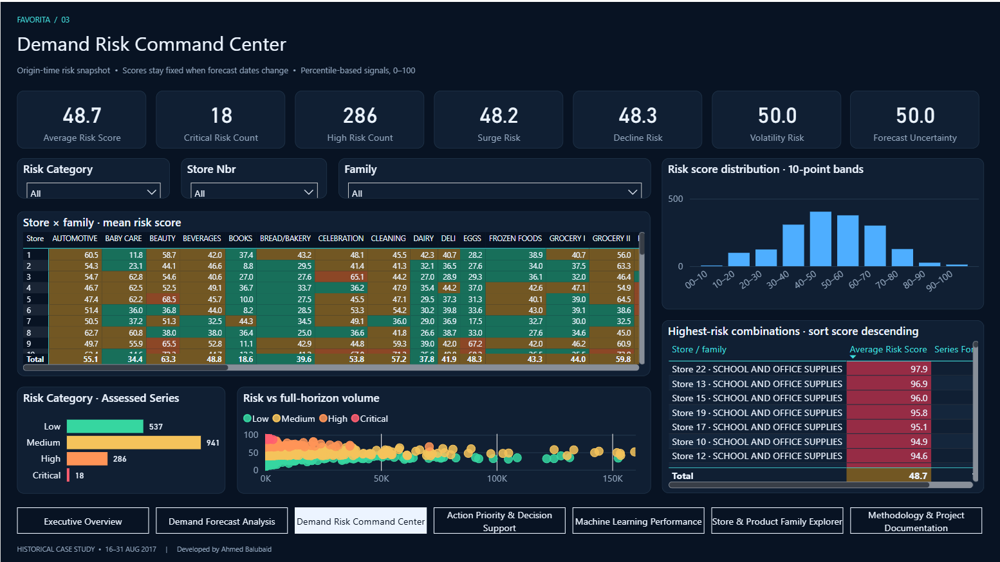
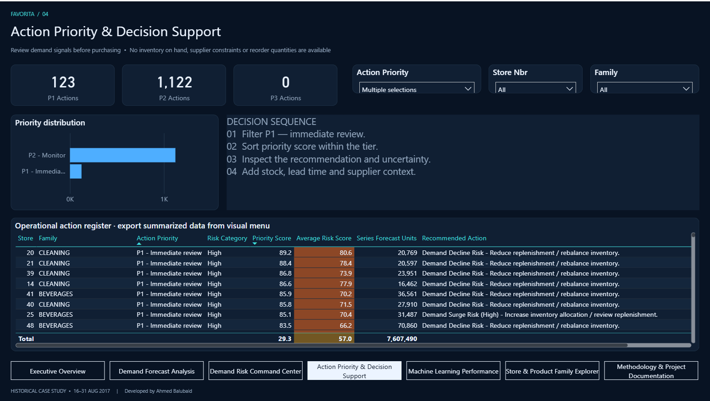
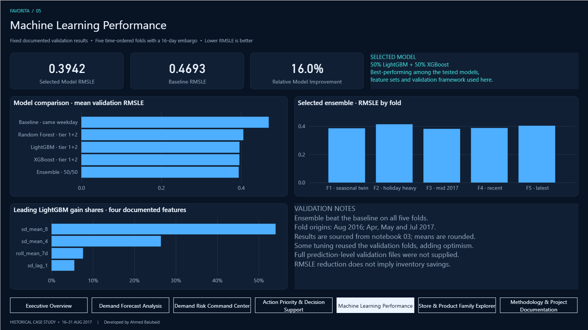
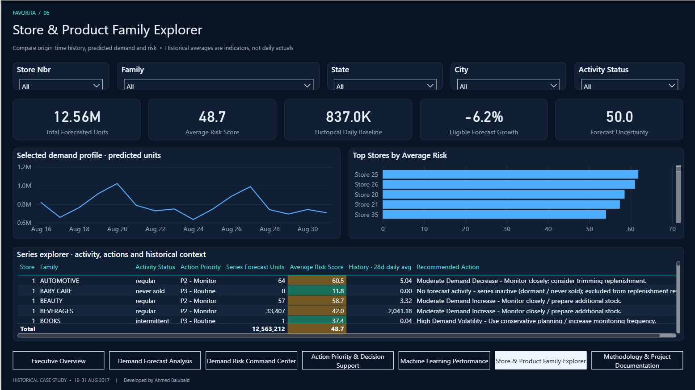
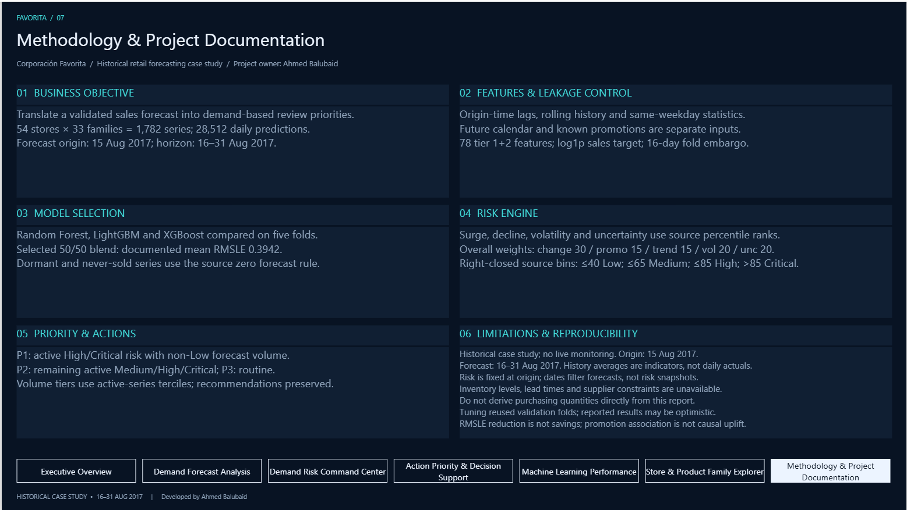

Project at a Glance
54 × 33Stores × Product Families
28,51216-Day Forecast Rows
0.3942Selected Ensemble RMSLE
16.0%Lower Error vs Baseline
An end-to-end retail analytics case study built on Corporación Favorita data. The project forecasts demand across stores and product families, converts forecast behavior into explainable demand-risk priorities, and delivers the results through SQL Server and a seven-page Power BI decision-support report.

Retail planners need to anticipate demand across many stores and product families before deciding where to focus inventory and replenishment attention. A forecast alone is not enough: management also needs to know which store-family combinations show unusual demand change, volatility, or uncertainty.
“How much should we expect to sell, where, and when — and which demand signals deserve immediate review?”
The source data contains more than 3 million historical daily sales rows. The final forecasting scope covers 54 stores, 33 product families and a 16-day horizon from 16–31 August 2017, producing 28,512 daily predictions across 1,782 Store × Family series.
Daily store-family sales history with promotions, holidays, transactions and store metadata.
Origin-time lags, rolling statistics, same-weekday history, calendar features, promotions and activity status.
Five time-ordered validation folds with a 16-day embargo to reflect the real forecast horizon.
16 days, generating 28,512 predictions with no negative or missing forecast values.
Random Forest, LightGBM and XGBoost were evaluated across five time-ordered folds. The selected model is a 50/50 LightGBM + XGBoost blend because it delivered the best mean RMSLE among the tested models while beating the baseline across all five folds.
The forecast is converted into an explainable 0–100 Demand Risk Score for every Store × Family series using four dimensions: demand surge, demand decline, volatility and forecast uncertainty. The result is a review category, action priority and recommended action.
This is demand-based inventory attention, not a stockout or overstock prediction. The dataset does not contain inventory-on-hand, lead times, safety stock or reorder constraints.
Summarizes forecast volume, risk exposure, P1 actions, risk distribution and leading stores and product families.
Explores the 16-day forecast by date, store and family, including promotion-associated demand and detailed daily predictions.

Examines risk dimensions, distribution, Store × Family risk patterns and the highest-risk combinations.

Turns risk scores into operational review priorities and a filterable action register with recommended actions.

Documents model comparison, fold-level RMSLE, feature gain shares and validation limitations.

Provides an interactive view of demand, historical context, risk and recommended actions by store and family.

Makes the forecasting assumptions, leakage controls, risk methodology and limitations explicit for reviewers.

The analysis forecasts sales for 16–31 August 2017 using historical Corporación Favorita data. It is not live store monitoring. Risk scores are decision-support signals and should not be interpreted as direct purchasing quantities or inventory savings.